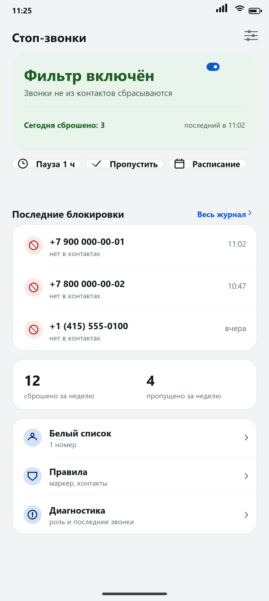

Сбрасывает входящие с номеров, которых нет в ваших контактах, до первого гудка. Ведёт журнал, знает про паузу и белый список. Без рекламы, без аккаунта, без слежки.
Скачать APK Исходный код
Система отдаёт приложению звонок до того, как телефон зазвонит. Номера нет в контактах — вызов отклоняется.
Номер, время и причина каждого решения: «нет в контактах», «номер в контактах», «пауза по расписанию».
Час для курьера, расписание на будни с 9 до 18 или разовый пропуск следующего звонка.
Номера больниц, доставок и других нужных людей проходят всегда, даже когда фильтр включён.
Роль фильтрации на телефоне одна. Назначив её приложению, вы отключаете встроенный определитель Google; вернуть можно там же, в «Caller ID & spam app».
В приложении есть кнопка «Проверить обновление»: оно смотрит последний релиз на GitHub, скачивает APK и передаёт его системному установщику. Обновление ставится поверх — журнал и белый список сохраняются. Если удобнее вручную, скачайте новый APK и установите его тем же способом.
Проверка обновлений — единственное сетевое действие приложения. Запрос идёт только к
api.github.com, никакие данные о звонках и контактах не передаются.
Android не передаёт такие вызовы приложениям-фильтрам. Чтобы не звонили и они, включите в приложении «Телефон» блокировку неизвестных: Телефон → Настройки → Заблокированные номера → «Неизвестные».
STIR/SHAKEN подтверждает номер на стороне оператора. Опция «блокировать без маркера» есть, но по умолчанию выключена: иначе под блокировку попали бы и ваши контакты. Журнал показывает маркер для каждого звонка.
Поэтому +7 916 123-45-67, 8 (916) 123-45-67 и 9161234567 считаются
одним номером. Иначе форматирование ломало бы сверку.
Приложение бесплатное, без рекламы и без платных версий. Если оно экономит вам время и нервы — можно отблагодарить автора: